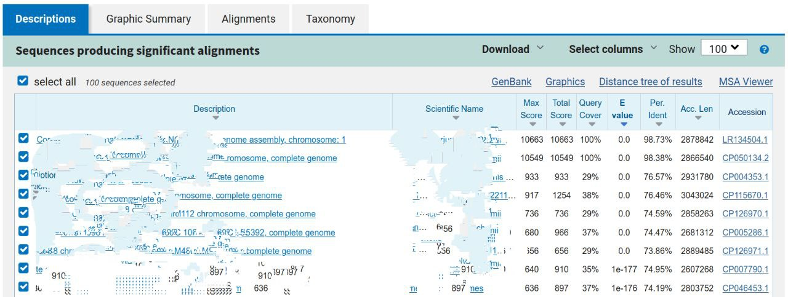
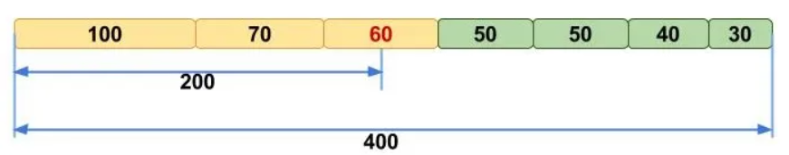

Assembly and Co-assembly of Metagenomic Raw Reads
![]()
Learning Objectives
In the following exercises you will learn how to perform metagenomic assembly and co-assembly, and to start exploring the output. We will shortly observe assembly graphs with Bandage, peek into assembly statistics with assembly_stats, and align contig files against the BLAST database.
The process of metagenomic assembly can take hours, if not days, to complete on a normal sample, as it often requires days of CPU time and 100s of GB of memory. In this practical, we will only investigate very simple example datasets.
Once you have quality filtered your sequencing reads, you may want to perform de novo assembly in addition to, or as an alternative to, read-based analyses. The first step is to assemble your sequences into contigs. There are many tools available for this, such as MetaVelvet, metaSPAdes, IDBA-UD, or MEGAHIT.
We generally use metaSPAdes, as in most cases it yields the best contig size statistics (i.e. more contiguous assembly), and it has been shown to be able to capture high degrees of community diversity (Vollmers, et al. PLOS One 2017). However, you should consider pros and cons of different assemblers, which not only includes the accuracy of the assembly, but also their computational overhead. Compare these factors to what you have available.
For example, very diverse samples with a lot of sequence data (e.g. samples from the soil) uses a lot of memory with SPAdes. In the following practicals we will demonstrate the use of metaSPAdes on a small short-read sample, Flye on a long-read sample, and MEGAHIT to perform co-assembly.
Before we start…
Let’s first move to the root working directory to run all analyses:
cd /home/training/Assembly/Activate the environment as follows to access the tools we will use in this session:
source /home/training/venv/training_env1/bin/activateThe raw reads used for assembly generation can be found in the data_dir/[long/short]_reads folders.
Short-read assemblies: metaSPAdes
For short reads, we will use SPAdes - St. Petersburg genome Assembler, a suite of assembling tools containing different assembly pipelines. For metagenomic data, we will use the more metagenomic-specific side of SPAdes: metaSPAdes.
metaSPAdes offers many options that fit your requirements differently, which mostly depend on the type of data you want to assemble. To explore them, type metaspades.py -h. Bear in mind that options will differ when selecting different tools (e.g. spades.py vs metaspades.py) and they should be tuned according to the input dataset and desired outcome.
The default metaSPAdes pipeline executes an error correction step on the input fastqs. Since reads have already been polished in the previous step, you can run metaSPAdes without the error correction step.
You can see available metaspades parameters by typing the following:
metaspades.py -h This execution should be able to run on a 4-core, 16 GB RAM machine. However, we kindly ask you to NOT launch the execution on your VMs. Execution time would overall cover half of the session (metaSPAdes alone would take ~15 minutes). Also, you will prevent overload on the VMs and potential crashing, since VMs available resources barely cover metaSPAdes’ requirements.
An explanation of selected parameters follows:
-t 4threads--only-assemblerskips the error correction step-m 5memory limit in Gb-1 short_reads/input_1.fastqforward reads-2 short_reads/input_2.fastqreverse reads-o assembly_spadesoutput folder
All output files (including intermediate ones) can be found in the assembly_spades folder. contigs.fasta and scaffolds.fasta are usually used for downstream analyses (e.g. binning and MAG generation). We will focus on contigs.fasta for this session, which is the same you are going to use in the coming practicals.
Without having to go all the way down to MAGs, you can sometimes identify strong taxonomic signals at the assembly stage with a quick blastn alignment.
Take the first 100 lines of the sequence and perform a blast search (choose Nucleotide:Nucleotide from the set of options). Leave all other options as default on the search page. To select the first 100 lines of the assembly perform the following:
head -n 101 assembly_spades/contigs.fastaThe resulting output is going to have the following format (but look a bit better than this): 
What species does this sequence seem to be coming from?
Does this make sense as a human oral bacterium? Are you surprised by this result at all?
As mentioned in the theory talk, you might be interested in different statistics for your contigs. assembly_stats is a tool that produces two simple tables in JSON format with various measures, including N10 to N50, GC content, longest contig length and more. The first section of the JSON corresponds to the scaffolds in the assembly, while the second corresponds to the contigs.
Contigs are ordered from the longest to the shortest.
N50 is a measure to describe the quality of assembled genomes that are fragmented in contigs of different length, used to assess the sequence length of the shortest contig at 50% of the total assembly length (after sorting assembled contigs from longest to shortest).
A (hopefully) clarifying picture to understand N50, where N50==60: 
Essentially, the higher this value, the better, as it means that longer contigs cover half of the final assembly, making it less fragmented. However, this only makes sense when thinking about alike metagenomes.
Note that, like N50, other values can be considered e.g. N90 is the shortest contig length to cover 90 percent of the metagenome.
You can call assembly_stats with the following command:
assembly_stats assembly_spades/scaffolds.fastaYou will see a short output with a few statistics for your assembly. In lines with format N50 = YYY, n = Z, n represents the amount of sequences needed to cover 50% of the total assembly. A “gap” is any consecutive run of Ns (undetermined nucleotide bases) of any length. N_count is the total Ns (undetermined nucleotide bases) across the entire assembly.
What is the length of the longest and the shortest contigs?
What is the N50 of the assembly? Given that input sequences were ~150bp long paired-end sequences, what does this tell you about the assembly in terms of statistics?
Another tool to keep in mind for metagenomic assemblies is QUAST, which provides a deeper insight on assemblies statistics, like indels and misassemblies rate, in a very short time.
Long-read assemblies: Flye
For long-reads, we will use Flye, which assembles single-molecule sequencing reads like PacBio and Oxford Nanopore Technologies (ONT) reads. Like SPAdes, Flye is a pipeline that takes care of assembling raw reads and polishing. Similarly to assembly scaffolding, it tries to overcome long-read base call error by comparing different reads that cover the same sequencing fragment.
Flye’s parameters are described in the help command:
flye -hFlye supports metagenomic assemblies with the --meta flag.
The output for this section can be found in the assembly_flye folder. They have been generated with the following parameters:
--nano-raw: depending on the quality of data, a different pre-set can be used. For example, if reads were previously polished and adapters were removed, we could use--nano-corr.--nano-hqshould be reserved, respectively, for corrected and higher-quality data. The same applies to thepacbiooptions.long_reads/file.fastqinput raw reads file--out-dir assembly_flyeoutput folder--threads 4number of threads
Note that we did not use the --meta flag. The assembly output of the same command with the addition of --meta is in the folder assembly_flye_meta.
As before, we recommend to NOT launch this command during this session. Each execution would take around 5 minutes, but it would take up all CPUs.
Diving into assembly graphs
Let’s have a first look at how assembly graphs look like. Bandage (a Bioinformatics Application for Navigating De novo Assembly Graphs Easily) is a program that creates interactive visualisations of assembly graphs. They can be useful for finding sections of the graph, such as rRNA, SNPs, or identify specific parts of a genome. Note, you can install Bandage on your local system. With Bandage, you can zoom and pan around the graph and search for sequences, and much more.
We will use Bandage to compare the two assembly graphs we generated with Flye and metaSPAdes. We will start with metaSPAdes.
When looking at metaSPAdes files, it is usually recommended to launch Bandage on assembly_graph.fastg. However, our assembly is quite fragmented, so we will load assembly_graph_after_simplification.gfa.
Bandage &In the Bandage GUI perform the following:
- Select File -> Load graph
- Navigate to
/home/training/Assembly/assembly_spadesand openassembly_graph_after_simplification.gfa
Once loaded, you need to draw the graph. To do so, under the “Graph drawing” panel on the left side perform the following:
- Set Scope to
Entire graph - Click on
Draw graph
Can you find any large, complex parts of the metaSPAdes graph? If so, what do they look like?
Now open another instance of Bandage as you previously did, and open assembly_flye/assembly_graph.gfa.
How does the Flye assembly differ from the one generated with metaSPAdes?
As already mentioned, we launched Flye both with and without --meta on long_reads/ONT_example.fastq. You can now repeat the procedure for this other graph.
This file originally comes from run ERR3775163, which can be browsed on ENA. Have a look at its metadata.
Can you understand why the assembly graph of the execution without --meta looks better than the one with --meta?
If you blast the first contig of the long-read assembly, do results match the metadata you find on ENA?
Co-assemblies: MEGAHIT
In the following steps of this exercise, we will observe co-assembly of multiple datasets. Remember that co-assembly produces meaningful results only when applied to “similar” samples. This is the case for the raw reads we co-assembled: they originally come from a single sample that has been split for this exercise. In particular, we co-assembled more data coming from the same sample we assembled with metaSPAdes.
megahit -hYou will find MEGAHIT output files in the co_assembly_short_reads folder.
As earlier, these are the parameters we generated the co-assemblies with, but we recommend not to launch the command in this instance.
-1 [forward files comma-separated]-2 [reverse files comma-separated]-o co_assembly_megahitoutput folder-t 4number of threads--k-list 23,51,77list of k-mer lengths
Compare the results of the co-assembly contig file to the single-assembly one with assembly_stats.
How do this assembly differ from the one generated previously with metaSPAdes? Which one do you think is best?
You might notice that MEGAHIT does not generate assembly graphs by default. To do so, execute:
megahit_toolkit contig2fastg 77 co_assembly_megahit/final.contigs.fa > co_assembly_megahit/final.contigs.fastgThe samples used for the metaSPAdes assembly and the MEGAHIT co-assembly come from the same source. Do you see any relevant difference between the two assembly graphs?
… And now?
If you have reached the end of the practical and have some spare time, look at the paragraphs labelled “Extra”. They contain optional exercises for the curious student :)
…….. Yes, but now that I am really, really done?
You could try to assemble raw reads with different assemblers or parameters, and compare statistics and assembly graphs. Note, for example, that metaSPAdes can deal ONT data (but it will likely yield a lower quality assembly).